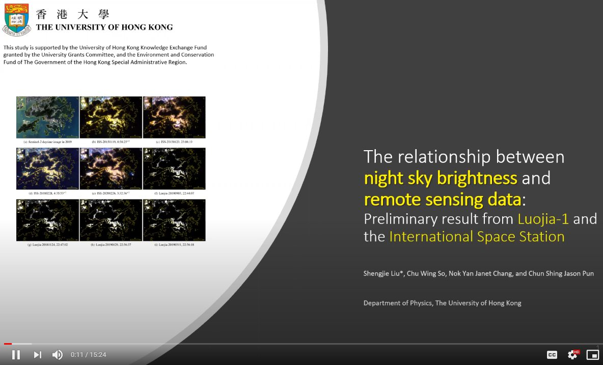
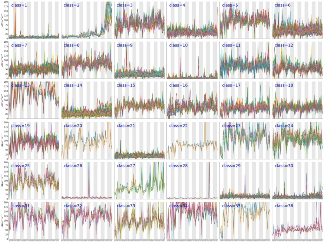
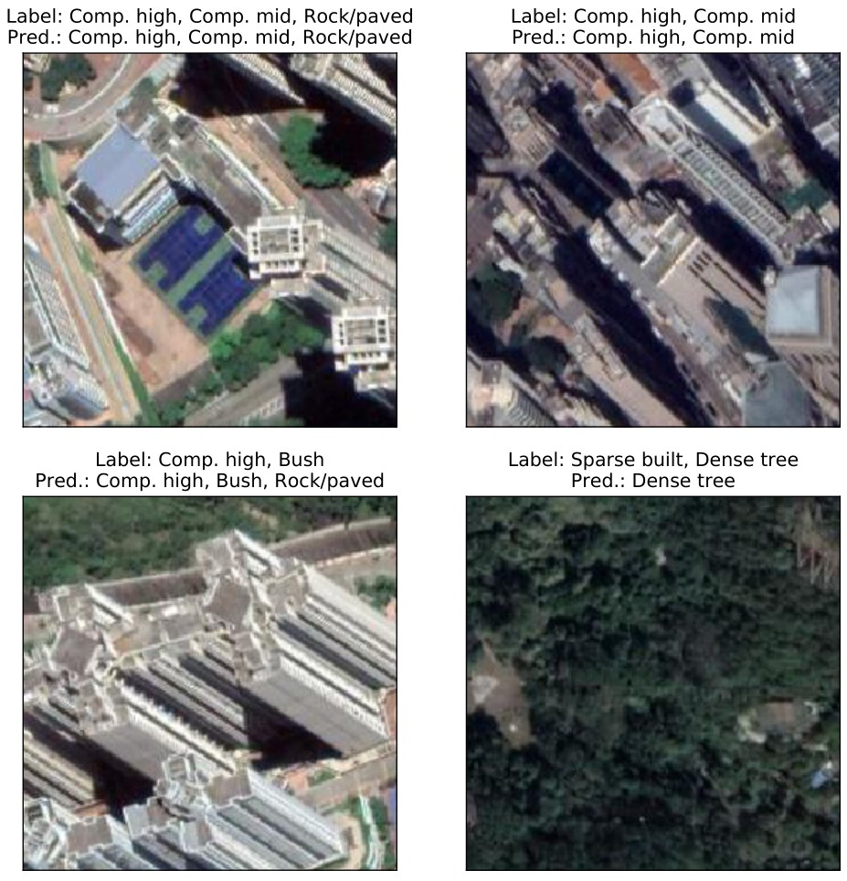
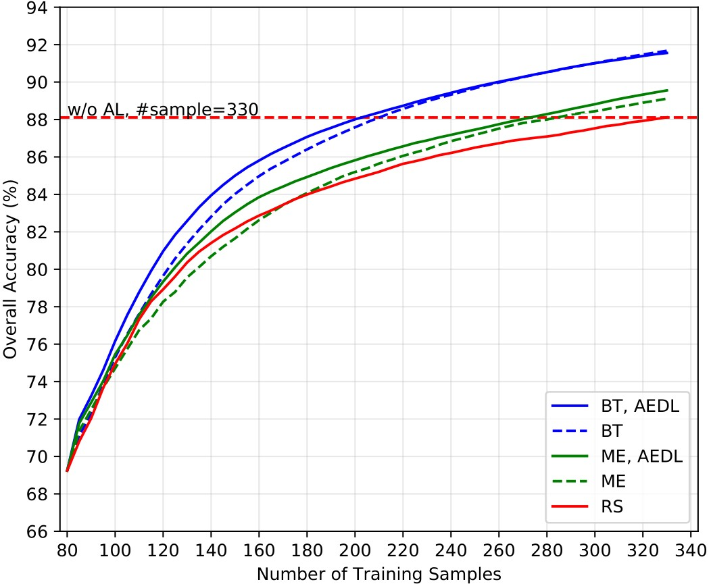
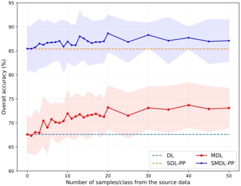
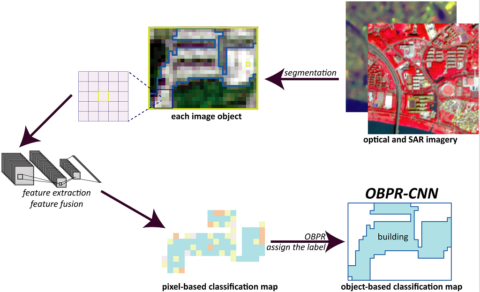
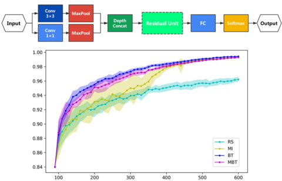

|
I am an incoming PhD student in Population, Health and Place at USC (fall 2021). I study artificial light at night (ALAN) and light pollution in Hong Kong with Dr Jason Pun at HKU Physics. Before HKU, I received my B.S. in GIS from Sun Yat-sen University. Check out the 7-year nighttime lights in Hong Kong observed from space and more about the Globe-at-Night Sky Brightness Monitoring Network. Email / CV / Github / Google Scholar / ResearchGate / Twitter |
|
Map of 360 photos to identify light pollution (in progress) |
 |
Working Project with the HKU Light Pollution Research Team |
|
So, C.W., Chang, N.Y.J., Liu, S., Canas, L., Walker, C.E., Cheung, S.L., and Pun, C.S.J. 7th International Conference on Artificial Light at Night (ALAN), 2021 abstract / ask for video presentation Analyzed the cloud amplification effect on NSB based on 30+ stations of the GaN-MN |
|
|  |
Shengjie Liu, Chu Wing SO, Janet Chang, Chun Shing Jason Pun 7th International Conference on Artificial Light at Night (ALAN), 2021 abstract / ask for video presentation Examined the relationship between night sky brightness (NSB) and two medium-resolution remote sensing data (Luojia-1 and ISS) in Hong Kong |
|  |
Shengjie Liu, Chu Wing SO, Chun Shing Jason Pun Proceedings of IEEE International Geoscience and Remote Sensing Symposium, 2021 preprint / bibtex Analyzed the long-term artificial light at night (ALAN) using VIIRS monthly product in Hong Kong between 2012 and 2019 |
|  |
Shengjie Liu, Qian Shi Proceedings of IEEE International Geoscience and Remote Sensing Symposium, 2021 preprint / bibtex / LCZ Map of Hong Kong Generated multi-label local climate zone map in Hong Kong using very high-resolution imagery |
 
|
Shengjie Liu, Qian Shi, Liangpei Zhang IEEE Transactions on Geoscience and Remote Sensing, 2020 project page / code / preprint / published version / bibtex Identify unknown classes in hyperspectral land cover mapping in the open world using multitask deep learning. Empower the deep learning models with the ability to reject unseen categories of land cover. |
|  |
Shengjie Liu, Haowen Luo, Qian Shi IEEE Geoscience and Remote Sensing Letters, 2020 bibtex Enhanced multiview active learning based on the disagreement of local minima of convolutional neural networks in a snapshot ensemble fashion. Improved the stability of neural networks for PolSAR image classification. |
 
|
Shengjie Liu, Qian Shi ISPRS Journal of Photogrammetry and Remote Sensing, 2020 project page / paper / preprint / New LCZ Map / bibtex Using scene classification strategy with deep neural network to generate local climate zone maps in fifteen cities in China. |
|  |
Shengjie Liu, Qian Shi IEEE Geoscience and Remote Sensing Letters, 2020 bibtex Enhanced hyperspectral image classification with spectral knowledge from other images using multitask deep learning. * The figure presented is from a working paper based on this method. |
|  |
Shengjie Liu, Zhixin Qi, Xia Li, Anthony Gar-On Yeh Remote Sensing, 2019 paper / bibtex / data Proposed a novel method to empower CNNs to produce object-based classification maps, named “Object-Based Post-classification Refinement” (OBPR). Also analyzed the effect of fusing Sentinel optical and PolSAR data in urban land cover mapping. |
|  |
Shengjie Liu, Haowen Luo, Ying Tu, Zhi He, Jun Li Proceedings of IEEE International Geoscience and Remote Sensing Symposium, 2018 paper / bibtex Proposed a light-weight neural network named Wide Contextual Residual Network (WCRN), and combined it with active learning to reduce the need of training samples for remote sensing image classification. |
|
2019-2021
Shengjie Liu
|

{kind=link}